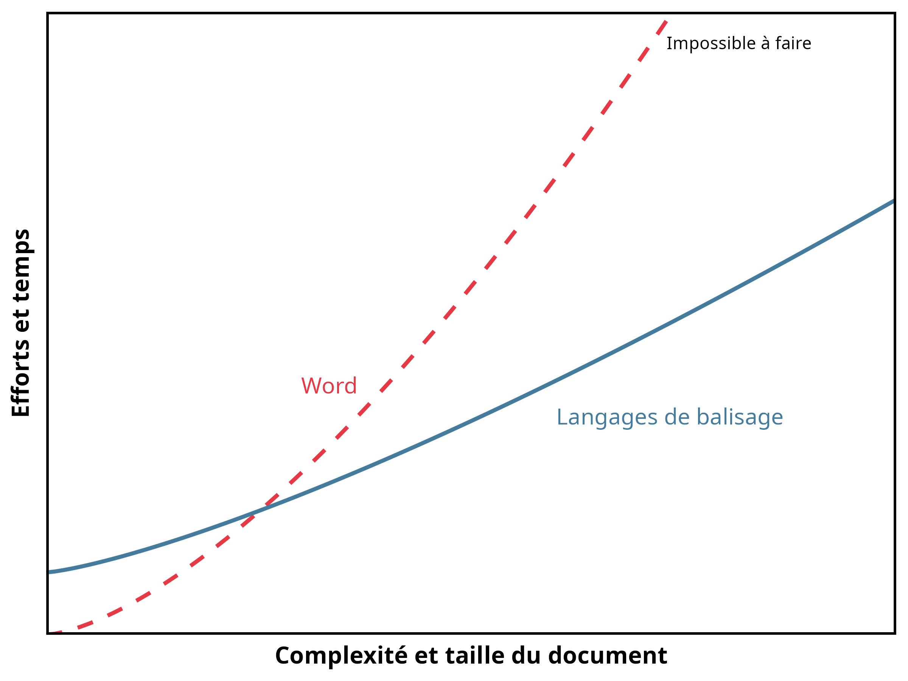
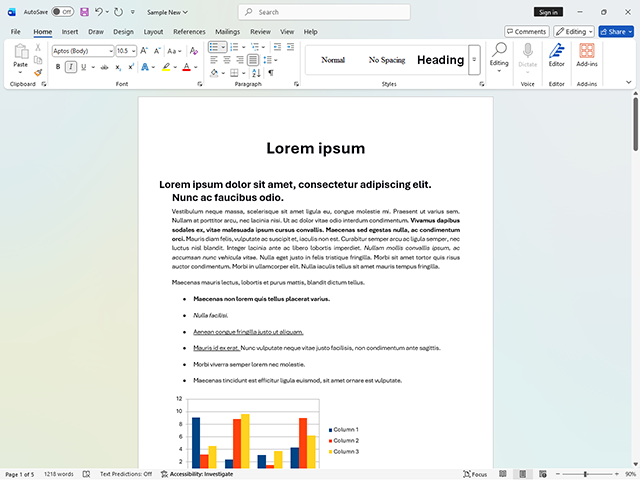
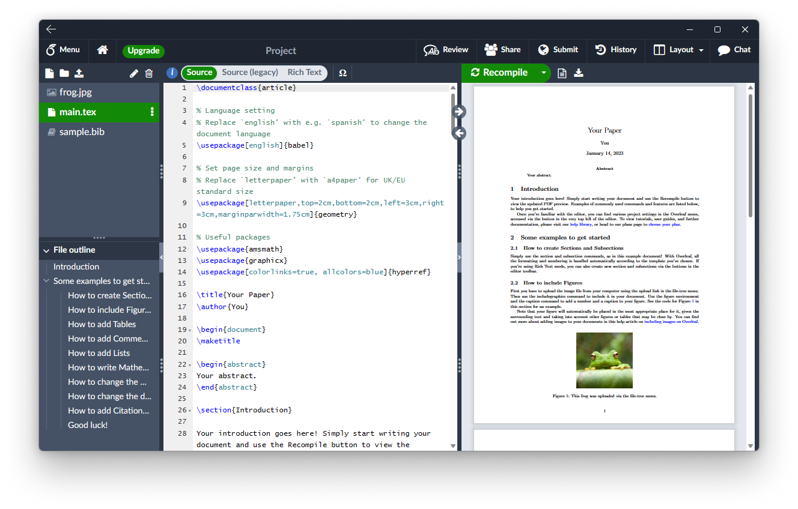

Je me présente
Marc-Antoine Dupuis
Étudiant à la maîtrise en science politique, Université Laval
- Projet de maîtrise sur les politiques publiques québécoises et canadiennes
- Assistant de recherche au CAPP et à Vox Pop Lab
- Projets : Datagotchi, Polimètre, Boussole Électorale
- Réserviste, Forces armées canadiennes
Une clinique, pas un cours magistral
Vous avez déjà eu beaucoup de théorie en avant-midi et vous en aurez encore en après-midi.
Ici, l’objectif est différent : repartir avec des gestes concrets.
Un minimum de théorie pour comprendre le principe, puis du temps pour manipuler vous-mêmes les outils.
Ordre du jour
| Heure | Activité |
|---|---|
| 13:05–13:10 | Présentation et tour de classe |
| 13:10–13:20 | Théorie : le strict nécessaire |
| 13:20–13:50 | Pratique : manipuler les outils |
| 13:50–14:00 | Questions et retour à vos classes |
Tour de classe
Quelles sont vos connaissances?
- Avez-vous déjà utilisé LaTeX ou Overleaf?
- Avez-vous déjà utilisé Markdown ou Quarto?
- Utilisez-vous déjà Zotero pour vos références?
- Utilisez-vous déjà Git ou GitHub?
- Avez-vous déjà eu besoin d’un gabarit institutionnel (mémoire, thèse, article)?
On ajuste le rythme de la clinique selon vos réponses.
1 · Théorie : pourquoi?
Le strict nécessaire avant de passer à la pratique
Exemple : Word vs LaTeX

Word : interface avec boutons, résultat visible immédiatement, fonctions limitées aux boutons disponibles.
LaTeX : commandes écrites manuellement, contrôle presque illimité, coût d’apprentissage plus élevé.
Deux interfaces, un même résultat

Résultat visible immédiatement, dans l’interface.

Source et résultat compilé, côte à côte.
Qu’est-ce qu’une balise?
Un langage de balisage est un ensemble de commandes entremêlées au texte.
Quand vous cliquez sur Gras dans Word, le logiciel enregistre exactement la même instruction — l’interface vous la cache simplement.
Le balisage rend l’instruction visible et redonne du contrôle à l’utilisateur.
Structure d’un fichier .tex ou .md
Même principe dans les deux cas :
| Étape | .tex |
.md / .qmd |
|---|---|---|
| Prélude — quoi faire | \documentclass{}\usepackage{...} |
En-tête YAML ---format, packages, bibliographie |
| Contenu brut | Texte + balises entre\begin{document} … \end{document} |
Texte + balises Markdown |
| Compilation | pdflatex / xelatex → PDF |
quarto render → HTML, PDF, DOCX |
Une fois ce principe reconnu, apprendre un deuxième langage de balisage devient beaucoup plus rapide.
2 · Pratique
Manipuler les outils, un exemple à la fois
Gabarit LaTeX de l’Université Laval
La Faculté des études supérieures et postdoctorales (FESP) impose une mise en page précise pour les mémoires et les thèses.
https://www.overleaf.com/latex/templates/tagged/ulaval
- des gabarits officiels existent pour respecter ces normes sans les recréer soi-même;
- Overleaf permet de les utiliser sans rien installer : importer le gabarit, éditer dans le navigateur, compiler en un clic.
On l’ouvre ensemble dans Overleaf.
Gabarit clessn/gabarit-fesp-ulaval
Une version maintenue par le CLESSN, prête à l’emploi :
https://github.com/clessn/gabarit-fesp-ulaval
- structure déjà conforme aux exigences de la FESP;
- fichiers organisés par chapitre;
- il suffit de cloner le dépôt et de remplacer le contenu.
On regarde ensemble la structure du dépôt.
Comment le gabarit s’assemble
Deux mécanismes distincts, à ne pas confondre :
| Fichiers | Rôle | Assemblés par |
|---|---|---|
00-resume.Rmd00-abstract.Rmd00--remerciements.Rmd00-avant-propos.Rmd |
Pages préliminaires obligatoires (FESP) | Lus ligne par ligne et injectés dans le YAML de index.Rmd |
01-article1.Rmd02-article2.Rmd03-conclusion.Rmd99-references.Rmd |
Chapitres du corps du texte | Listés dans _bookdown.yml (rmd_files) |
index.Rmd est le fichier qu’on ouvre et qu’on knitte — mais c’est _bookdown.yml qui décide de l’ordre des chapitres.
Le clic « Knit »
bookdownassemble les chapitres listés dans_bookdown.yml, dans l’ordre;- le tout devient un seul
.tex— Markdown ne sait pas composer une page (marges, bibliographie, table des matières), LaTeX le sait déjà; xelatexcompile ce.texen PDF final.
Si un package LaTeX manque (ex. setspace.sty), TinyTeX l’installe automatiquement au premier essai — patientez, ça se règle tout seul.
Zotero : exporter en BibTeX
Dans Zotero :
- clic droit sur une référence (ou une collection);
- Exporter l’élément…;
- choisir le format BibTeX;
- enregistrer ou glisser directement le résultat dans un fichier
.bib.
Le fichier .bib peut ensuite être appelé depuis LaTeX ou Quarto.
Compiler : exporter en PDF
Dans RStudio
- bouton Render, ou
quarto render presentation.qmddans le terminal.
Dans Overleaf
- bouton Recompile, en haut à droite de l’éditeur.
Dans les deux cas, le même principe s’applique : la source et ses balises sont transformées en document final.
Montrer : HTML — mon site web
https://github.com/MADUP212/MADUP212.github.io
- on ouvre
index.htmlà côté du site publié; - mêmes balises que dans Word ou LaTeX : titres, gras, listes, images;
- ici, la « compilation » se fait directement dans le navigateur.
Montrer : cette présentation — Markdown
https://github.com/MADUP212/MADUP212.github.io/tree/main/presentation_eiom
- cette présentation est écrite en Markdown (Quarto
revealjs); - chaque diapositive commence par
##, exactement comme un titre Word; - on compare la source
.qmdet le résultat affiché à l’écran.
Ce que je retiens
- Une balise est une instruction que l’interface cache habituellement.
- Un fichier balisé suit toujours le même principe : prélude, contenu, compilation.
- Zotero, un gabarit institutionnel et RStudio/Overleaf suffisent pour démarrer.
- Le bon outil dépend du document à produire, pas d’une préférence absolue.
L’objectif n’était pas de tout mémoriser, mais de savoir par où commencer.
Pour aller plus loin
Source principale
Outils de recherche en sciences sociales numériques, « Livre d’outils ».
Chapitre 8, « Outils de rédaction en sciences sociales numériques : les langages de balisage », Alexandre Fortier-Chouinard, Étienne Proulx et Maxime Blanchard.
Chapitre 1, « Le logiciel libre et le code source ouvert », Jozef Rivest et Catherine Ouellet.
Questions
13:50–14:00
À 14:00 : retour à vos classes.

Comment choisir le bon outil?
Une grille simple, empruntée au chapitre 8 du Livre d’outils :
Aucun outil ne gagne sur tous les critères à la fois : le bon choix dépend du document à produire.